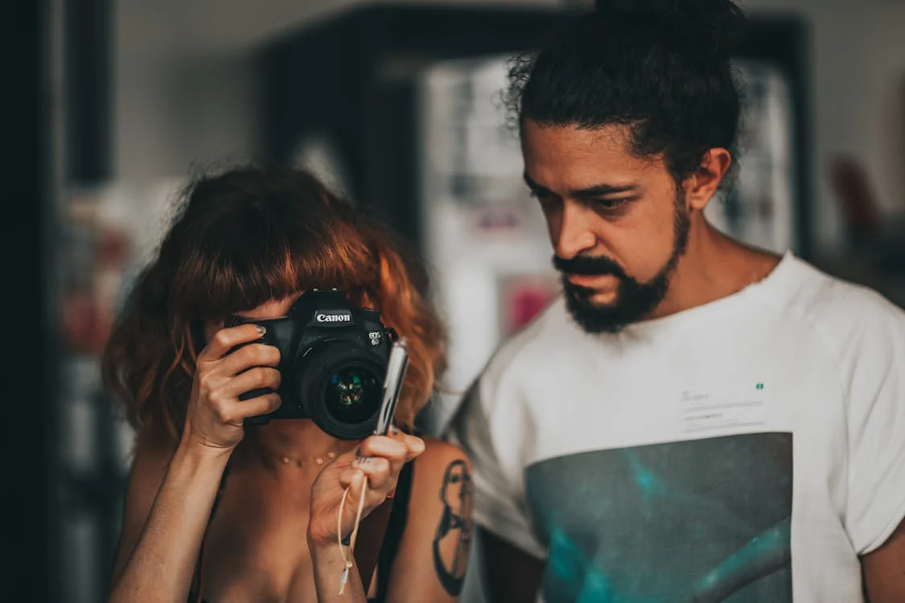

Sobre nosotros
Bienvenido a PHOTO CLASSES, donde la pasión por la fotografía y arte se une con la excelencia educativa. Desde nuestra fundación, nos hemos comprometido a proporcionar una experiencia educativa única y enriquecedora para todos los apasionados de la fotografía, ya sean principiantes entusiastas o profesionales en busca de perfeccionar su arte.
